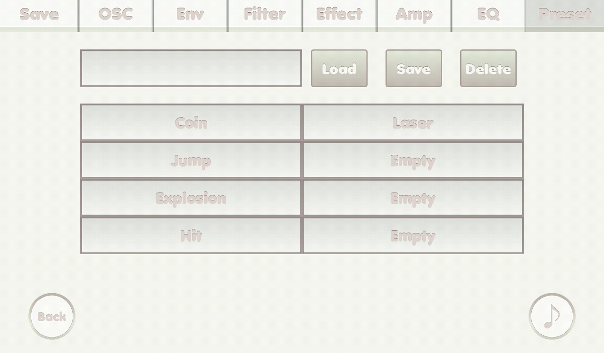

{% include JB/setup %}
Preset screen

- Text field: put text to load, save or delete preset.
- Load button: load preset.(put "Default" to load default preset)
- Save button: save preset as the text in the text field.
- Delete button: delete preset if the text in the text field exists.
- Preset buttons: touch to put text into the text field.